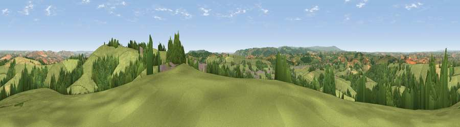

Viewpoint near Pathfinder Village
#6612 in England · top 9% of its area beats it · near Pathfinder Village · access?Where it is
The exact computed spot (SX 84275 94762). Click the marker for map links.
Public access: no public right of way or access land is recorded at this exact spot — it may be on private land. Computed from Natural England's CRoW access layer and OpenStreetMap rights of way — not the legal definitive map. Always verify locally.
The view, rendered

A 360° render of this exact spot computed from the terrain model, tree cover and land cover — summer colours, afternoon light, calibrated against photographs of famous viewpoints. Real trees, hedges and buildings will differ in detail.
The panorama
Grey silhouette: terrain skyline in each direction (720 bearings, Earth curvature and refraction included). Dashed green: skyline with trees (+15 m) and buildings (+8 m) as obstacles. Blue strip: how far the ground is visible on each bearing.
Where the view opens
Wedge length = distance to the farthest visible ground on that bearing (vegetation-aware). Rings at 10, 25 and 50 km.
What fills the view
66% grassland · 23% woodland · 9% cropland · 1% built-up
Angular shares of the visible panorama (visual magnitude), not map area. Landscape diversity 0.39 (0–1 Shannon).
Key numbers
More beautiful places nearby
The staircase of upgrades: each row has a higher view potential than everything closer. Driving times are estimates from straight-line distance, calibrated against real road routing — check an actual route before setting out.
| Place | Direction | Drive | Score |
|---|---|---|---|
| Viewpoint near Pathfinder Village | NNE · 1 km | ~3 min | 71.0 |
| Viewpoint near Whitestone | E · 2 km | ~5 min | 75.1 |
| Viewpoint near Whitestone | E · 2 km | ~6 min | 79.8 |
| Viewpoint near Kenn | SSE · 13 km | ~24 min | 80.0 |
| Viewpoint near Kenton | SSE · 16 km | ~28 min | 80.7 |
| Viewpoint near Kenton | SSE · 16 km | ~29 min | 82.9 |
| Viewpoint near Holcombe | SSE · 22 km | ~36 min | 83.3 |
| Viewpoint near Shaldon | SSE · 25 km | ~41 min | 83.8 |
50.74090, -3.64146 · source: screening · position refined by local search. Computed location — check access rights before visiting.